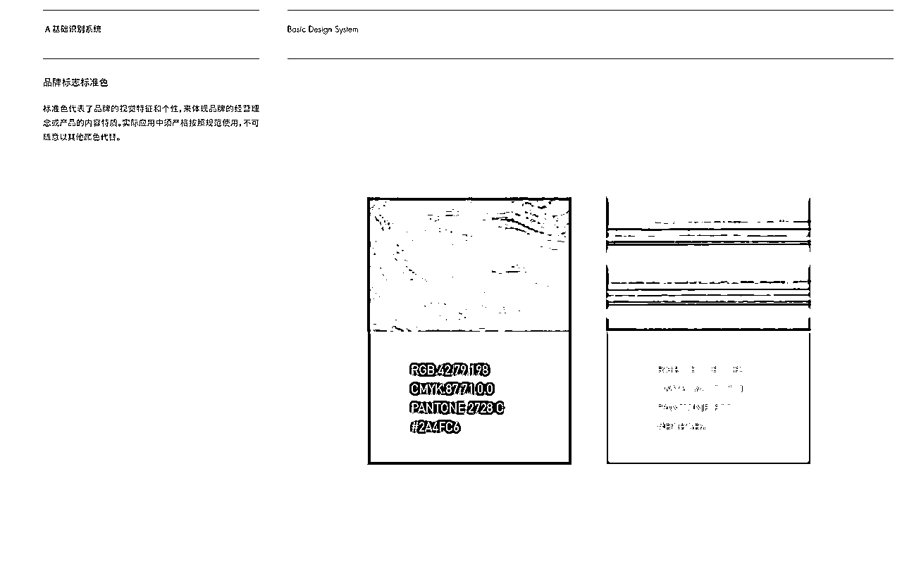
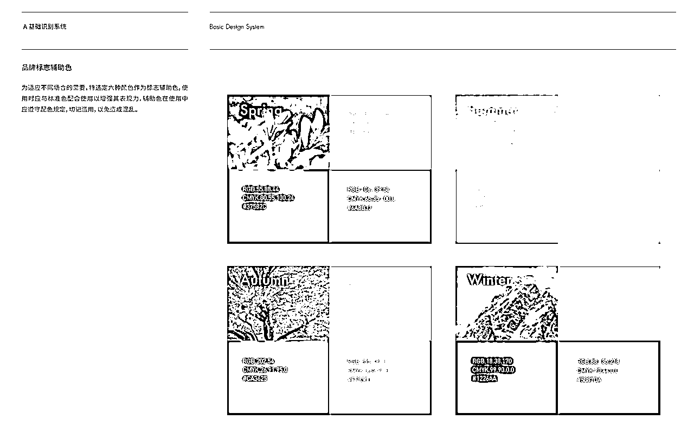
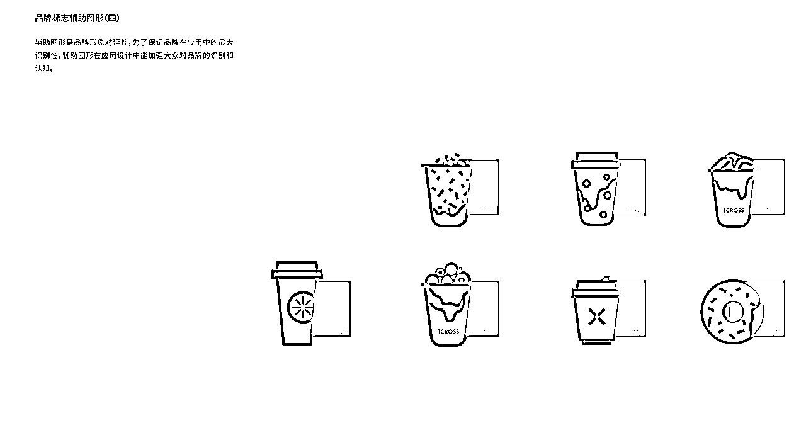
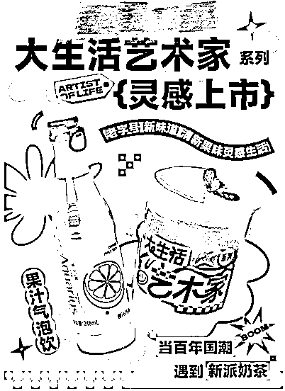
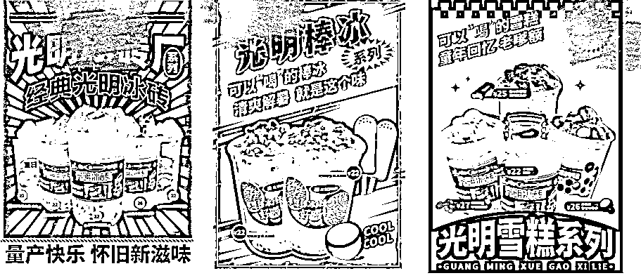
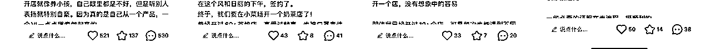
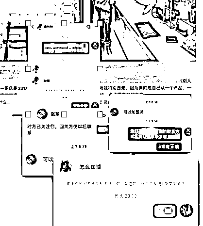

来源：https://to2gggwkin.feishu.cn/docx/TDDIdznLfoYOvkxw4FScZdpLnJg
先自我介绍下，我是VV，目前有一家自己的营销策划公司，已经服务过100+餐饮客户，我们主要做的还是品牌内容服务，和流量解决方案。
今天就拿一个这两年陪跑过的某饮品品牌案例来做一个分享
分享一下我们凭什么可以让品牌起死回生，从10家变成新增80家，拿到大结果，到底我们做对了什么。
先说结果：
该饮品店是加盟店模式
我们接手的时候，他们已经快“死”了，缩减到只有10家左右。还赶上口罩最后一年。在做了一系列动作之后，去年逆势增长80家（包含已经签约还未开的）
我们到底做了哪些，哪些特别有效，今天就来真诚拆解分享
一：重塑形象，打好视觉基石
二：调整产品线，抓主推，提升记忆点
三：调整市场部布局与运营动作
四：打开流量
五：发觉小红书的威力+老板IP（新时机）
六：收获
我是这样理解品牌的。
每一个品牌推向市场，你可以把它人格化，类似明星这样。明星都是美女帅哥居多，但是你怎么让大众记住呢？ 一定会集中推一个形象和感觉，俗称记忆点。
你的品牌记忆点可以有很多，但是“视觉”是最直观的，所以这步是基础，是奠基
我们在和客户沟通后，发觉他们真的底子太差了，也小看市场了，怪不得几年时间，萎缩到只有10家左右。
我们就建议客户当成0开始做，重新出发，先做全部的调性升级。
如果这个基础不打好，那以后所有的输出都是乱的，客户也是比较配合，所以在口罩事件的时候，正好用了大概1个多月，急速完成了一套VI的升级。
因为品牌信息不方便透露，这里只展示部分元素可以看下
可以看到我们在做配色的时候就会考虑“故事性”因素。 以及一些延展图像符号元素的使用了



这里我想提醒下视觉中我们会考虑的几个元素
另外在品牌运作期间，我们会非常严格把控每个物料的输出，比如杯贴，杯套，甚至一张海报
他们之前做的海报我找不到文件了，但是真的惨不忍睹，很多直男老板会有这个意识，就是平面这东西不痛不痒无所谓，所以不会去管，甚至会觉得打印店做做，但是现在做餐饮品牌，已经进入到多维度战争了，视觉尤其是一把破圈的利器，千万不要小看
举例我们给客户做的部分内容（有些信息马赛克了）


因为茶饮店就那么30不到的平方，视觉输出点是非常有限的，你必须得费尽心机才有机会留客产生购买。这个心机就体现在方方面面，最直观的比如是不是有打卡点，可拍摄点，你的收银台，是不是有台卡，海报长什么样子，或者电视机里播放什么。
消费者是最好的审判长，他们见过太多了，你是土的，你就做的东西要土到底，你是洋气的，就要会玩。
说一个有意思的观察，身为品牌老板，你真的得了解自己，因为品牌就像你的亲生孩子，一定是带着你的DNA的，所以有时候我会看到，洋气的人就是能做一些潮感的店，那么有些感觉比较“土”或者很怀旧的，做出来的老牌感的餐饮，其实质感也是非常棒的。
所以所谓的网红，不=潮，而是在你的赛道里，把调性做到极致，吸引目标客群
然后说说我们做的另外一个很重要的事情，也是很容易被餐饮老板所忽视的
就是你的产品，需要让市场部强介入！这个非常重要
在服务客户中，我们发现一个问题，如果产品你让主厨freestyle，虽然也没毛病，但是做出来的产品容易缺乏“流量感”和“市场感”。
所以我们会这么做。
研发告诉我们这个月要做的系列和使用的食材，我们会提出市场端口想呈现的想法，一起打磨产品元素，最后市场部来取名字，讲故事，这样就效果会很好多。
核心产品，是一定要抓出来的，在面对市场的时候，打透
饮品店真的很卷，基本每个月都会有上新，小上新一般用应季食材，如果大上新，就会前期部署很久，因为会结合投流，那就一定要考虑的更周全了。
再给你们一招，到底怎么做差异化产品，怎么做流量产品
可以用一个破圈思维，和跨界思维，比如，我用甜品的元素做成奶茶，类似蒙布朗奶茶这些，栗子蛋糕奶茶，或者我让这杯饮品变成和情绪相关联的产品，比如emo解药等等
其实这招现在很多都在用了，比如唇膏会用甜品的名字，比如中餐会用西餐的摆盘，会玩跨界就比较容易破圈和触达更多用户的敏感神经
另外一招就是借势，在茶饮上我们用的是和高势能品牌的联名，当时比较巧的是正好和一个高势能品牌联名，做一个快闪，我就推着老板，立马要搞大！然后投入精力认真开发联名产品+媒体投流放大
果不其然，经过运作后，变成网红事件，带来的效果是非常非常给品牌加分的，甚至有很长的长尾效应，到现在都会有加盟电话来问这个产品
简单说下市场动作我们做了哪些调整，因为视觉和产品OK了，等于基础打好了。像一个庞大的机器一样，要开始运转，才可以推动品牌去往要去的地方。
我们会让客户强化几个渠道的内容输出维护（仅提及与市场相关部分）
如果针对想要放加盟，或者连锁门店，我分享一个技巧，可以低成本扩大势能
你可以让门店开启矩阵式抖音和小红书号，内容主要总部来做，门店做分发，或者鼓励门店自己做，设置一个激励的奖金池。这样的好处是，你可以吸引自己的目标粉丝，而且不会被达人流量绑架
以上内容是不是已经觉得信息量够多了？其实这些还不止。
你想一个美女要成为明星，是不是还需要不同的话题打造，不是化化妆穿漂亮衣服就得了。比如杨幂的“逆袭成为资本”“带货女王”，比如fbb的“我自己就是豪门，范爷”，诸如此类。
所以【主题+流量助推】仍旧非常重要。
通常比较常规的做法就是，上一波重要的新品，结合活动之后，然后找达人推广
其实现在公众号我们不太会投了，数据实在太水，也没什么人看，但是如果要推加盟，你还是需要一些宣发的标志性的东西，所以这个时候会投1-2条
其他的渠道就建议集中在点评，小红书，抖音，这些做透，已经差不多了
不用去找很贵的头部大博主，你要的还是铺面广，一般我们就是做KOC+达人组合
推广方式，一次就一个话题，可以针对1-2个爆品，千万不能散
我们不太会每个月都撒达人，一个是本地达人就这么多，翻来覆去用没必要，但是一般一个季度会有一次集中的投入，如果一年有一个事件性的爆品营销节点，那就会投入比较多的预算了，为了服务加盟的目的。
你要知道，打枪肯定也是集中一个地方最容易命中，如果是散弹，看起来子弹一样，但是目标太多，不容易击中要害。
遇到过一个情况，万万要不得，客户当时投入了一波效果起来了，进加盟电话了，就立刻想节约预算停止后续的营销，其实这个思维是完全错误的，你只有乘热打铁，只有继续保持高势能，才是最省力的推广。所以还是要从战略角度看问题和看动作决策
这一章之后我想单独开一片详细说。
这里就简单说一下我们大概做了什么。
你们有没有发觉流量越来越贵，而且效果越来越差。这是有一些根本原因的，第一个是达人就那么一些达人，品牌又越来也多，消费者也越来越聪明，所以现在推广不像以前，布局一些流量就马上有效果。
但是再难，还是得推品牌啊，所以我思考让老板换了一个模式。
我们要把流量抓在自己手上，其中最有效果的，尤其针对轻餐和饮品甜品的，就是小红书，真的真的值得好好重视！
小红书开蓝V号，认真运作+投流，吸引粉丝，会有后台来询单的，也会有人看到帖子过来问加盟的。
而且慢慢的还有死忠粉丝了，每次更新，都抢着留言，还是挺有意思的。
同步我们也估计更多的城市门店开设自己的官方号，多铺设内容，多一个曝光都是你自己争取来的。
另外有一个动作是超出我预期的，就是老板的IP号，这个和蓝V结合，简直是王炸！
因为老板个人形象和表达都比较年轻，也适合小红书，我就鼓励他开了一个小红书账号，前期因为我自己想测试，就帮他运作，发到第五条帖子的时候就爆了，很多人留言，瞬间流量起来。

IP号是真的可以低粉变现的，对会玩这块的老板，这个方式真的认真抓主，是可以撬动大流量和大收益的，这个方式用来做加盟也绝对真香。

甚至有意思的是，你人设运作好之后，粉丝粘性强到可怕，这个和粉丝量是无关的。我们在筹备新店的时候，还有粉丝跑去监工，或者天天后台问什么时候开。但是很可惜，后续客户老板没有坚持，就放掉了，所以感叹，很多时候想要持续拿到大结果，眼界，坚持，时间复利，缺一不可
深挖小红书，你会得到惊喜，如果你不会这套运作，也可以找我聊聊，说不定有更多的灵感
在这么一系列的“心机”布局下，当然中间也真的经历过很多波折
最终才终于让品牌起死回生拿到了结果，从倒闭的边缘，到去年78月开始重启加盟新增80家，持续增长
希望这个案例可以从全局思维给你点启发
如果对餐饮有兴趣或者有希望深度探讨或合作的伙伴，也欢迎探讨